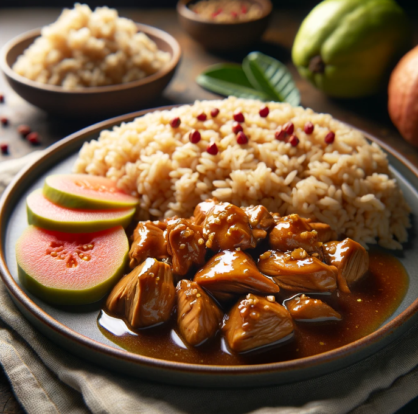

Chicken Adobo with Brown Rice
Ingredients
- ½ boneless, skinless chicken breast (approximately 100 grams)
- ½ cup uncooked brown rice (approximately 100 grams)
- 1 cup water
- ¼ cup soy sauce (low-sodium preferred)
- ¼ cup white vinegar
- 2 cloves garlic, minced
- 1 bay leaf
- 5 whole black peppercorns
- Pinch of salt and pepper to taste
| Nutrition Facts |
| Calories |
450 kcal |
| Protien |
35g |
Meal Procedure
- In a pot, wash the brown rice thoroughly. Add the water and bring to a boil.
- Reduce heat, cover the pot, and simmer for 30-40 minutes, or until the brown rice is tender and cooked through.
- While the rice cooks, prepare the chicken adobo.
- In a shallow dish or bowl, combine soy sauce, vinegar, garlic, bay leaf, and peppercorns.
- Add the chicken breast to the marinade and coat it well. Let it marinate for at least 15 minutes, or up to 30 minutes for deeper flavor.
- Heat a non-stick pan over medium heat. Remove the chicken from the marinade, reserving the marinade.
- Sear the chicken breast for 2-3 minutes per side, or until golden brown.
- Pour the reserved marinade into the pan with the seared chicken. Bring to a simmer and cook for 10-15 minutes, or until the chicken is cooked through and the sauce thickens slightly.
- Remove the bay leaf and peppercorns before serving.